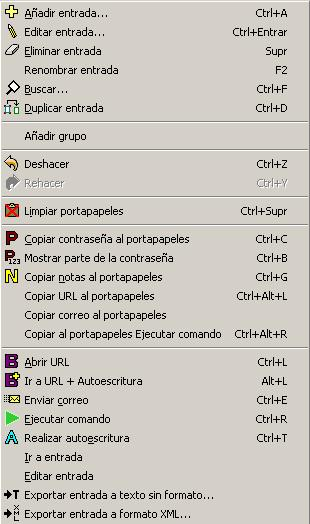

| Entrada | Alias | Grupo | ||
|
 | |
A través del menú editar puedes añadir, editar, usar y organizar nombres de usuario y contraseñas. Ten en cuenta que el contenido de este menú cambia de acuerdo a lo que está seleccionado en la vista principal (por ejemplo, si has seleccionado una entrada o un grupo). Además, algunos elementos pueden estar desactivados, como se indica a continuación.
Añada un nuevo usuario y contraseña. Deshabilitado si la base de datos se abre en
modo sólo lectura.
Para más información ver Nombres de usuario, contraseñas y grupos.
Cuando está seleccionada una entrada, edita la misma. Cuando está
seleccionado un grupo (en vista de árbol), expande o contrae las
entradas contenidas dentro del grupo. Editar una entrada está deshabilitado
si la base de datos se abre en modo sólo lectura.
Para más información ver Nombres de usuario, contraseñas y grupos.
Cuando se selecciona una entrada, esta se borrará. Cuando se selecciona un grupo (en vista de árbol), borrará todas las entradas bajo el grupo seleccionado. Se pide confirmación si hay más de una entrada en el grupo seleccionado. Está deshabilitado si la base de datos se abre en modo sólo lectura.
Renombra la entrada seleccionada (o grupo, en vista de árbol). Está deshabilitado si la base de datos se abre en modo sólo lectura.
Busca una entrada que contenga el texto dato. Por defecto se busca en todos los
campos excepto la contraseña.
Para más información ver Buscar un texto.
Duplica la entrada seleccionada. Está deshabilitado si la base de datos se abre en modo sólo lectura.
Crea un nuevo grupo de contraseñas (por ejemplo, Contraseñas de bancos). Está deshabilitado si la base de datos se abre en modo sólo lectura.
Se deshace la última acción. Repetir deshacer deshace las acciones en el orden inverso, de la última a la primera.
La última acción deshecha se ejecuta de nuevo.
Limpia la memoria del portapapeles. Elimina del portapapeles cualquier cosa que se pegase allí por Password Safe (contraseña, usuario, notas, etc.). Si el contenido actual del portapapeles no proviene de Password Safe, no tendrá efecto.
Copia la contraseña de la sección actual al portapapeles.
Esta acción muestra una ventana que te permite indicar qué caracteres de la contraseña mostrar. Esto el útil para sitios que preguntan por parte de la contraseña para iniciar sesión. Por ejemplo, la contraseña podría ser "qAdm3ddENc", y te podrían preguntar que introdujeses la primera, tercera, quinta y octava letras. Esta ventan te permitie hacer esto de una forma conveniente: Introduce en el campo superior las posiciones de los caracteres que quieres como subconjunto de la contraseña. Puedes usar espacios, comas o dos puntos para separar las posiciones. Los caracteres correspondientes de la contraseña se muestran en el campo inferior. Para salir, pulsa la tecla Esc.
Copia el usuario de la selección actual al portapapeles.
Copia el contenido del campo notas de la sección actual al portapapeles.
Copia el campo URL de la sección actual al portapapeles.
Copia el campo correo de la sección actual al portapapeles.
Copia el campo ejecutar comando de la sección actual al portapapeles.
Cuando está seleccionada una entrada, y esta tiene una URL asociada esto ejecutará el explorador por defecto con la URL. Si no se ha seleccionado una entrada o el campo URL de la entrada seleccionada está vacío, este comando estará deshabilitado.
Cuando está seleccionada una entrada, y esta tiene una URL asociada esto ejecutará el explorador por defecto con la URL. Si no se ha seleccionado una entrada o el campo URL de la entrada seleccionada está vacío, este comando estará deshabilitado.
Automáticamente introduce el usuario y contraseñas en el campo de entrada seleccionado.
Para más información ver autoescritura.
Prepar un correo para enviarse con la información del campo correo de la actual selección.
Para más información ver Nombres de usuario, contraseñas y grupos.
Introduce automáticamente el usuario y contraseña en el campo de entrada seleccionado.
Para más información ver autoescrituraType.
Esto ejecutará el comando del campo Ejecutar Cmd de la entrada seleccionada.
Para más información ver Ejecutar comando.
Cuando se selecciona una entrada, esto le permite crear una referencia a la entrada,
por lo general en otro grupo. Esto es útil si tiene una entrada que "pertenece" a más
de un grupo, pero no desea repetir los datos. Un acceso directo tiene un icono distinto asociado,
 , y por defecto
tiene el nombre "atajo a x", donde x es el título de la entrada original.
Por supuesto puedes editar el nombre, mover o borrar el atajo, como cualquier entrada normal.
, y por defecto
tiene el nombre "atajo a x", donde x es el título de la entrada original.
Por supuesto puedes editar el nombre, mover o borrar el atajo, como cualquier entrada normal.
Este elemento sólo aparece en un atajo o alias. Tras pulsar Ir a entrada base se seleccionará la correspondiente entrada base.
Este elemento sólo aparece en un atajo o alias. Tras pulsar Editar entrada base puedes editar la entrada base correspondiente a este atajo o alias.
La entrada seleccionada se exportará como texto sin formato. Antes de exportar,
se te preguntará la contraseñas maestra como confirmación, que pretendes
exportar un elemento de la base de datos a un archivo de texto no encriptado.
Para más información ver Exportar entradas.
La entrada seleccionada se exportará en formato XML. Antes de exportar,
se te preguntará la contraseñas maestra como confirmación, que pretendes
exportar un elemento de la base de datos a un archivo XML encriptado.
Para más información ver Exportar entradas.
Todas las funciones del menú Editar pueden realizarse también pulsando el botón derecho del ratón sobre la correspondiente entrada, alias o grupo.
| Entrada | Alias | Grupo | ||
 |
 |
 |
Toda la funcionalida se describe en la sección previa.